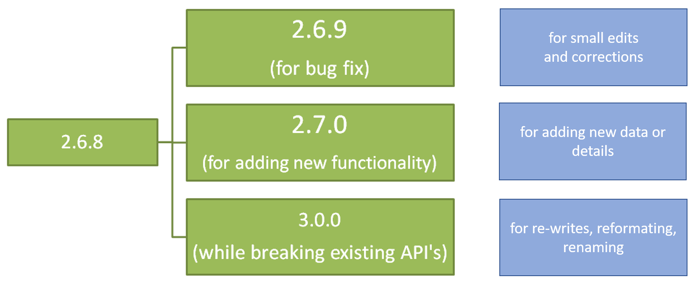

Version control
Last updated on 2025-01-27 | Edit this page
Overview
Questions
- How not to worry about making changes to a project?
- What is version control?
- What is git and github?
Objectives
- What are the problems with introducing changes to files
- Making a good file change description
- Why use version control systems
- Use of semantic versioning
(1 min teaching)

from: Wit and wisdom from Jorge Cham (http://phdcomics.com/)
Our projects are not static we:
- add new files
- add data entries to files
- modify manuscripts / methods
- reformat / reorganize data tables
- reanalyse data / update figures
- experiment with data cleaning / processing / visualization
- share and co-edit data or text files
All those actions introduce change to files of our project.
Exercise 1: Problems with change (5 min)
Which of these issues can you relate to?
- I have fifteen versions of this file - which one do I use?
- I can’t remake this figure from last year
- I slightly modified my code in one place, everything stopped working
- I have several copies of the same directory because I’m worried about breaking something
- Somebody added erroneous records in a shared file with samples, cannot find who and why
- You remember seeing a data file but cannot find it anymore: is it deleted? Moved away?
- I tried multiple analysis and I don’t remember which one I chose to generate my output data
- I have to merge changes to our manuscript from 10 different emails with collaborators
- I accidentally deleted a part of my work
- I came to an old project and forgot where I left/saved it
- I reorganized my data files, but broke the analysis pipeline and don’t know how to fix it
- I have trouble to find the source of a mistake in an experiment
- My directory is polluted with a lot of unused/temporary/old folders because I’m afraid of losing something important
- I made a lot of changes to my paper but want to bring back one paragraph
(6 min teaching)
When introducing changes to files and their content, we:
- overwrite old content or loose whole files (hoping they won’t be needed)
- may introduce side effects, e.g. renaming files may break analysis pipelines
- introduce multiple changes to multiple files which should be treated as one change, e.g. new version of a figure and a paragraph that describes it
- need to collate concurrent changes from collaborators e.g. “resolve conflicts”
Addressing those issues by tracking changes is called version control. Version control decouples the process of making changes from the physical change itself. It identifies (tags) a collection of changes to files and references them, potentially allowing to come back to the state before or after that change to retrieve details.
With version control file names do not reflect their versions. Information about versions and changes are kept separate from the files.
It is possible to achieve version control manually by a systematic approach for managing changes.
Manual Versioning
Our first suggested approach in which everything is done by hand has two main parts:
-
Add a file called
CHANGELOG.txtto the project’sdocssubfolder, and make dated notes about changes to the project in this file in reverse chronological order (i.e., most recent first). This file is the equivalent of a lab notebook, and should contain entries like those shown below.
## 2016-04-08
* Switched to cubic interpolation as default.
* Moved question about family's TB history to end of questionnaire.
## 2016-04-06
* Added option for cubic interpolation.
* Removed question about staph exposure (can be inferred from blood test results).- Copy the entire project whenever a significant change has been made (i.e. one that materially affects the results) and store that copy in a sub-folder whose name reflects the date in the area that is being synchronized. This approach results in projects being organized as shown below:
.
|-- project_name
| -- current
| -- ...project content as described earlier...
| -- 2016-03-01
| -- ...content of 'current' on Mar 1, 2016
| -- 2016-02-19
| -- ...content of 'current' on Feb 19, 2016Here the project_name folder is mapped to external
storage (such as Dropbox), current is where the current
work is done, and other folders within project_name are old
versions.
Data is Cheap, Time is Expensive
Copying everything like this may seem wasteful since many files won’t have changed, but consider: a terabyte hard drive costs about $50 retail, which means that 50 GByte costs less than $5. Provided large data files are kept out of the backed-up area (discussed below), this approach costs less than the time it would take to select files by hand for copying.
Keep changes small.
Each change should not be too large as to make the change tracking irrelevant. For example, a single change called “Data for paper” adding or changing several different type of data sets, and their analysis scripts and results is likely too large, as this doesn’t allow to distinguish between changes to different components of the analysis. Similarly, changes should not be broken up into pieces that are too small.
As a rule of thumb a good size for a single change is a group of edits that you could imagine wanting to undo in one step.Store each project in a folder that is mirrored off the researcher’s working machine
Use a system such as Dropbox or or Google Drive and synchronize the folder at least daily. It may take a few minutes, but that time is repaid the moment a laptop is stolen or its hard drive fails.Share changes frequently.
Everyone working on the project should share and incorporate changes from others on a regular basis. Do not allow individual investigator’s versions of the project repository to drift apart, as the effort required to merge differences goes up faster than the size of the difference.
Exercise 2: Manual versioning (5 min)
Which of these issues does manual versioning help to tackle?
- I have fifteen versions of this file and I don’t know which one to use
- I can’t remake this figure from last year
- I slightly modified my code in one place, everything stopped working
- I have several copies of the same directory because I’m worried about breaking something
- Somebody added erroneous records in a shared file with samples, I cannot find who and why
- You remember seeing a data file but cannot find it anymore: is it deleted? Moved away?
- I tried multiple analysis and I don’t remember which one I chose to generate my output data
- I have to merge changes to our manuscript from 10 different emails from collaborators
- I made a lot of changes to my paper but want to bring back one paragraph
How to document a change (6 min teaching)
A good entry that documents changes should contain:
- date of the change
- author of the change
- list of affected files
- a short description of the nature of the introduced changes AND/OR motivation behind the change
Examples of the descriptions are:
- added flow cytometry data for control and starvation stressed samples
- updated matplot library to version 3.4.3 and regenerated figures
- added panel with protein localisation to Figure 3 and its discussion in the text
- reverted to the previous version of the abstract text as the manuscript reached word limits
- cleaned the strain inventory
Recent freezer cleaning and ordering indicated a lot of problem with the strains data. The missing physical samples were removed from the table, duplicated ids are marked for checking with PCR. The antibiotic resistence were moved from phenotype description to its own column. - new regulation heatmap
As suggested by Will I used the normalization and variance stabilization procedure from Hafemeister et al prior to clustering and heatmap generation
The larger the project (measured either in: collaborators, file
numbers, or workflow complexity) the more detailed the change
description should be.
While your personal project can contain brief descriptions, larger
projects should always contain information about the motivation behind
the change and the consequences.
This manual procedure satisfies the requirements of version tracking without needing new tools. If multiple researchers are working on the same project they will need to coordinate so that only a single person works on specific files at any time. In particular, they may wish to create one change log file per contributor and to merge those files whenever a backup copy is made.
What the manual process described above requires most is self-discipline. The version control tools that underpin our second approach don’t just accelerate the manual process: they also automate some steps while enforcing others and thereby deliver more reliable results.
Exercise 3: Changelog in action (5 min)
Have a look at one of the example Github repositories and how they track changes:
Give examples of:
- what makes them a good changelog
- what could be improved
Think which are the most difficult features to replicate with manual version control?
The good things:
- all log entries contain date and author
- all log entries contain list of files that have been modified
- for text files the actual change can be visible
- the description text gives an idea of the change
What could be improved
- The pig files should probably be recorded in smaller chunks (commits). The raw data and cleaned data could be added separetely unless they all were captured at the same time.
- Rather than general “Readme update” a more specific description could be provided “Reformatted headers and list”
- some of the Ballous changes could do with more detailed descriptions, for example why the change took place in case of IQ_TREE entries
Version Control Systems
(13 min teaching)
How Version Control Systems Work
A version control system is a tool that keeps track of file changes for us and helps us version and merge our files. It allows you to decide which changes make up the next version, called a commit, and keeps useful metadata about them. The complete history of commits for a particular project and their metadata make up a repository.
A version control system stores snapshots of a project’s files in a repository. Users modify their working copy of the project and then save changes to the repository when they wish to make a permanent record and/or share their work with colleagues. The version control system automatically records when the change was made and by whom along with the changes themselves.
Repositories can be kept in sync across different computers facilitating collaboration among different people.
Crucially, if several people have edited files simultaneously, the version control system will detect the collision and require them to resolve any conflicts.


from: Version control with git (https://carpentries-incubator.github.io/git-novice-branch-pr/01-basics/)
Tool-based version control has several benefits over manual version control:
Instead of requiring users to backup copies of the whole project, version control safely stores just enough information to allow old versions of files to be re-created on demand.
Instead of relying on users to choose sensible names for backup copies the version control system timestamps all saved changes automatically.
Instead of requiring users to be disciplined about completing the changelog version control systems prompt them every time a change is saved. They also keep a 100% accurate record of what was actually changed, as opposed to what the user thought they changed, which can be invaluable when problems crop up later.
Instead of simply copying files to remote storage, version control checks to see whether doing that would overwrite anyones work. If so, they identify conflicts and merge changes.
We believe that the best tools for tracking changes are the version control systems that are used in software development such as Git. Git keeps track of what was changed in a file when and by whom and it can synchronize changes to a central server (GitHub) so that many users can manage changes to the same set of files.
Simplifying Git is a local program (like Word) that runs on your machine and knows how to track changes. Github is an online system that can communicate with Git and propagate your changes to other computers (like OneDrive can do for Word documents).
Keeping track of changes that you or your collaborators make to data and software is a critical part of research. Being able to reference or retrieve a specific version of the entire project aids in reproducibility for you leading up to publication, when responding to reviewer comments, and when providing supporting information for reviewers, editors, and readers.
Exercise 4: Using Version Control System (5 min)
Five reasons to use a version control system in research
- Tell the story: The history of your commit messages will describe your project progress.
- Travel back in time: a version control system makes it easy to compare different time points of your project smoothly. If you want to compare the stage of your project a year ago from now, it only takes one command-line of code.
- Experiment with changes: if you want to make changes in a script you can first make a “snapshot” of the project status before experimenting with changes.
- Backup your work: by being able to link your local repository (folder) to a distant online host (GitHub), a version control system backs up your precious work instantly.
- Collaborate easily on projects: having a web-hosted synchronised version of your project will encourage collaboration with other researchers. Think about a colleague of yours being able to add a script to make a figure for your publication for instance. The repository will track their contribution and evidence their participation in the project.
Which two are the most important for you.
Version Control System and FAIR
Looking at the reasons to use a version control system (VCS) in research, how does using VCS help in being FAIR?
- Online respository is a Findable and Accessible resource (also Trackable).
- Online repositories are also interoperable since they can be accessed from anywhere (with internet) and are not restricted to your local hard drive.
- The ‘telling story’ and being able to travel back in time helps in reuse and reproducibility.
Learning git (10 min teaching)
If you do any form of scientific computing: Python, R, Matlap or even bash script you simply must learn git and use it on a daily basis (no excuses).

from: xkcd (https://xkcd.com/1597/)
For lab-bench biologists git can have a steep learning curve. It was designed and developed for and by Linux developers so … user experience has never been its top priority. We encourage biologist to follow the best practice of manual versioning and then try to see git in actions. We are sure that after manual experience you apreciate the benefits of git, and accept the learning overhead.
Some git resources:
- Software Carpentry git workshop https://swcarpentry.github.io/git-novice/
- Edinburgh Carpentries runs courses: https://edcarp.github.io/
- https://ourcodingclub.github.io/tutorials/git/
- Crash course on youtube: https://youtu.be/SWYqp7iY_Tc
- Learn git branching: https://learngitbranching.js.org/
- Learn git-game: https://github.com/git-game/git-game
Semantic versioning (Optional)
(10 min teaching) Although we recommend to record small changes often a particular point in time (a set of changes) has its logical meaning.
Probably all of us made folders: submission, revision 1, revision 2 when publishing an article. Each containing the complete set of files.
In software engineering terminology, such as the “official” point in time (especially if it is meant to be consumed by others) is called release.
If you are a user of a software/library, unlike when accessing manuscripts, you may not always want to use the latest version of a software. For example, it may not support your old Windows version, it may change how it processes the data, or the output format. Updating software may introduce a lot of side effects to your pipeline.
Modern software is built using a lot of external software libraries, the potential issue when using the “newest version” of a library is well known and called “dependency hell”. To help deal with this problem, semantic versioning has been proposed (https://semver.org/\)[https://semver.org/].
In brief, it is a way for numbering software releases (naming particular versions).

from: Semantic versioning, Parikshit Hooda (https://www.geeksforgeeks.org/introduction-semantic-versioning/)
Semantic Versioning is a 3-component number in the format of X.Y.Z, where:
The leftmost number X denotes a major version. Major versions introduce “breaking changes”, i.e. changes will affect other software that interacts with it. For example, if the file format for inputs or outputs changes it is a breaking change as the existing files cannot be read (in case of input change) or the output files cannot be read. Another example are renaming program functions or changing their call parameters.
Y stands for a minor version. It is used for the release of new functionality in the system. When you increase the minor version you communicate that the software can be used exactly as the old version but it also offers some new features. For example, your plot library can now plot in colors not only black and white or the new version of software can output the results to both Excel and CSV files rather than just CSV.
Z stands for a Patch Versions: Versions for patches are used for bug fixes and security updates. There are no functionality changes in the patch version upgrades.

from: Semantic versioning, Parikshit Hooda (https://www.geeksforgeeks.org/introduction-semantic-versioning/)
When you increase the Major version you zero the remaining ones, when you increase Minor you zero the patch number.
Having “.” between major, minor and patch assures that when lexically sorted, major version will “dominate” minor, and minor dominates the patch number, see the sorted releases:
1.91.12
1.91.8
2.13.3-alpha
2.14-alpha
2.15-beta
3.0.923Semantic versioning permits dependency software to automatically choose the most recent version of a library, or automatically update libraries to a patched version while avoiding problems with changing to new major release.
While semantic versioning is mainly used for software, it is also
adopted for datasets or collaborative documents, as it communicates the
severity of changes. For example if you as the co-author read:
manuscript.2.1.5.docx and now there is
manuscript.2.1.10.docx you probably don’t need to do
anything, while manuscript.3.0.10.docx should capture your
attention.
For data and documents often only major.minor numbers are used.
Semantic versioning quiz (5 min)
- Which of the library version is the latest?
- 0.12.4
- 1.1.0
- 1.12.3-alpha
- 1.12.2
- You use library fair.2.3.1 to automatically upload your data after analysis. You found out that there is avaialble new version of the library fair.4.3.1. Which situation is the most probable?
- fair.4.3.1 uploads data twice as fast as fair.2.3.1
- you need to reserve time to test the new version and adapt your analysis pipeline to work with it
- both versions offer the same features and bug fixes as they have the same minor/path version 3.1
- You developed code that helps to plot detrended and normalized data, the last release has version 1.2.1. You added Z-score to the available normalization methods and fixed the spelling errors in the user messages. Which version number should you give to the new realease:
- 2.0.0
- 1.3.0
- 1.3.2
- 1.2.2
- 2.2.1
- Your group releases data about studied cancer patients following
semantic versioning. The last data sets are released as 1.11, you added
data from a new patient,
what version should you use:
- 1.12
- 2.11
- 2.0
- You were asked to better anonymize the above cancer data (v1.11) in
future releases. Instead of data and time of patient visit you release
only the year, the hospital names have been encoded and patient age has
been obscured by random noise.
What version should you use:
- 1.12
- 2.11
- 2.0
- c
- b
- b
- a
- c
Remember semantic versioning is only a convention, there is no guarantee that updating to next patch version won’t break your pipeline.
Semantic versioning and FAIR
How semantic versioning helps to be FAIR
Release version helps to be findable, the semantic notations help in achieving interoperability, reuse and reproducibility.
Attribution
- Majority of the content of this episode was adopted after Wilson et al. Good Enough Practices for Scientific Computing.
- Semantic annotations after (Parikshit Hooda)[https://www.geeksforgeeks.org/introduction-semantic-versioning/]
- Semantic Versioning 2.0.0
Key Points
- Version control system helps maintaining good practices
- Version control system keeps your work safe